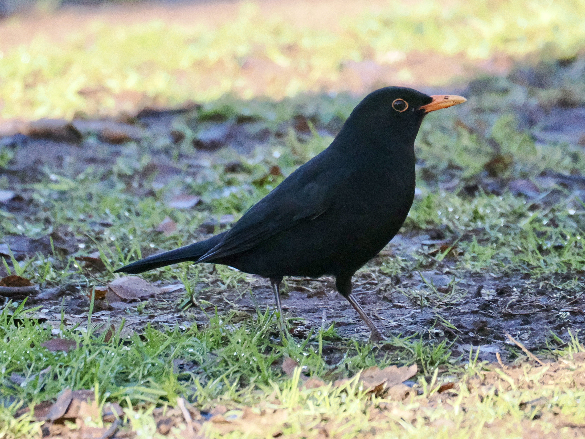
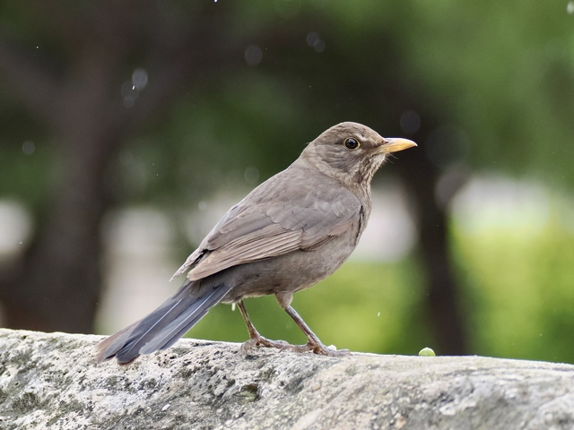
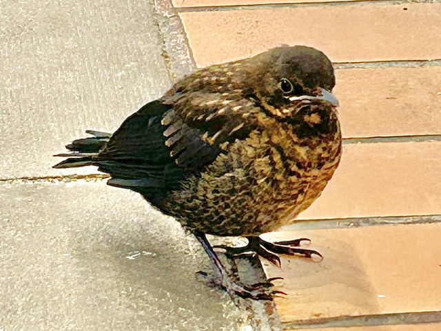
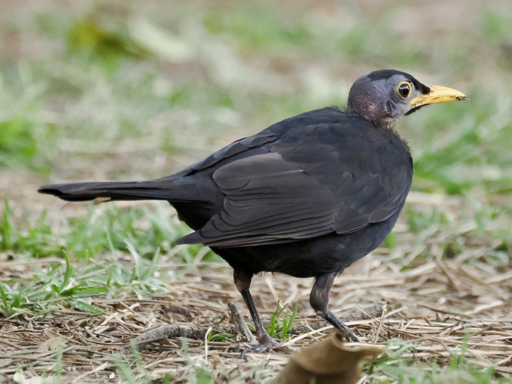

Eurasian Blackbird
Turdus merula
Order: Passeriformes
Family: Turdidae

A very common garden bird. Male is black with a yellow bill and eye ring. Often found on the lawn, hopping and stopping alternatively, or sifting through leaf litter for insects. Usually a ground feeder.

This is another case of the strange naming issue. Female is not black, but brown, also with a yellow bill and eye ring.

Fledgling is more spotted brown with a shorter tail and a fatter shape. Makes loud begging calls.

Sadly this little one is bald. Is it mites or moulting?